El debate sobre la corrupción.
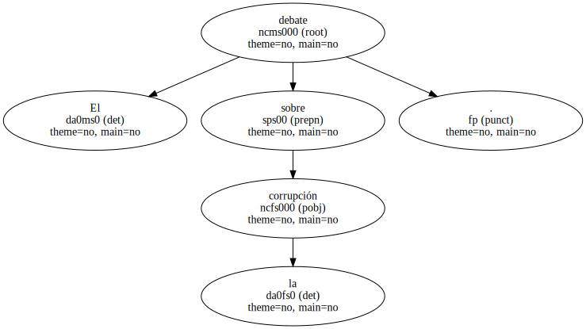La defensa del financiero alega que a éste no le conviene fugarse porque existe una orden de busca y captura de Kuwait.
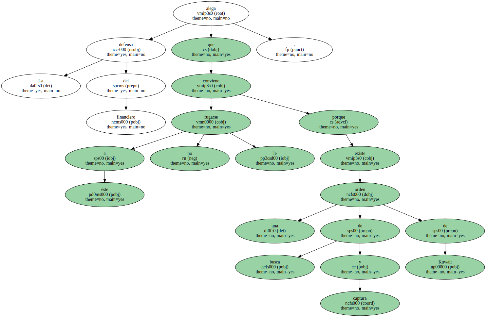La defensa de Javier de la Rosa , quien se encuentra en prisión desde hace más de seis meses , ha solicitado de nuevo a la juez del caso Torras su puesta en libertad por estimar que no existe ningún riesgo de fuga.
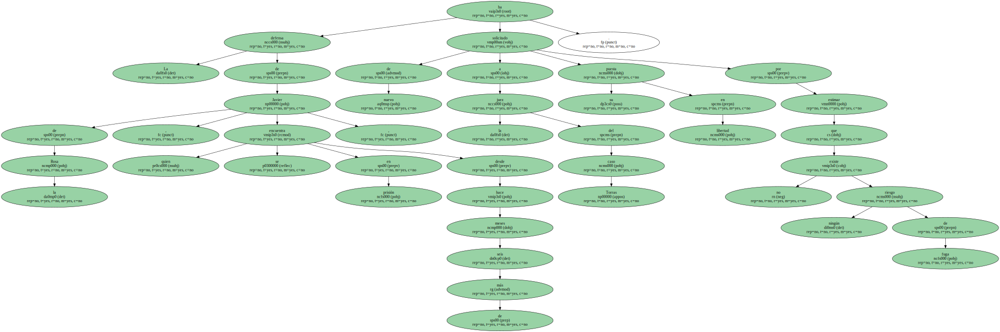Los abogados del financiero han remitido al juzgado copia de la petición de " auxilio jurisdiccional " formulada por el fiscal general de Kuwait ante los tribunales suizos.
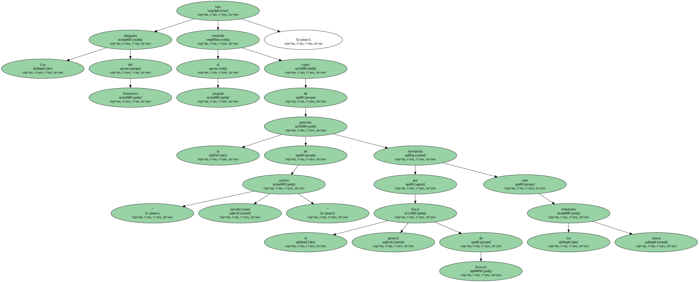Con este documento , la defensa de De la Rosa quiere subrayar que " España es el lugar más seguro " para él , ya que no puede ser extraditado por su condición de ciudadano español.
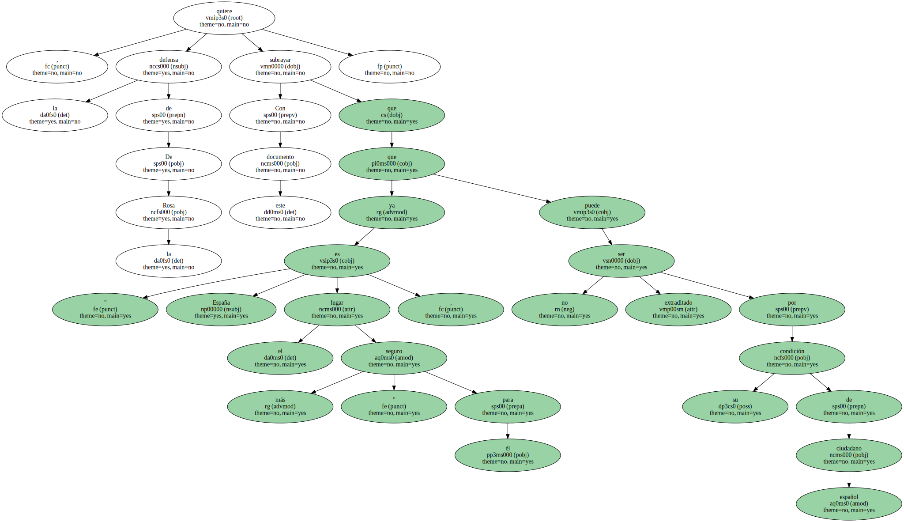En su escrito de apelación , los letrados Francesc Jufresa y Antonio Hernández-Gil destacan la " altísima probabilidad " de que se hayan adoptado órdenes de busca y captura internacional contra De la Rosa por la causa penal que se le instruye en Kuwait , por lo que no le interesa salir al extranjero.
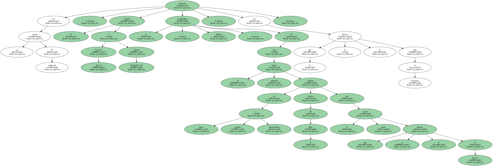Además de las causas de Madrid y Kuwait , el financiero tiene dos procedimientos penales en Barcelona y uno de carácter civil en Londres.
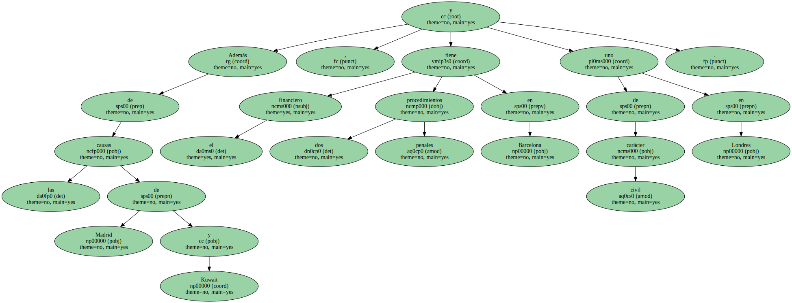Los abogados de De la Rosa destacan : " Nuestro país es el ámbito geográfico y social donde nuestro representado está arraigado personal y familiarmente y de donde nunca , en ningún momento y situación , ha hecho el menor intento de evadirse ".
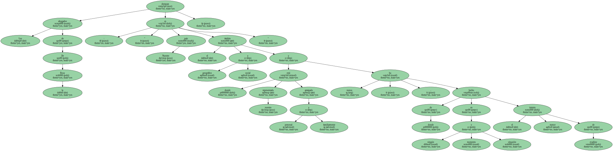Jufresa y Hernández-Gil insisten en reclamar la libertad de su cliente ante la " inexistencia del riesgo de fuga ".
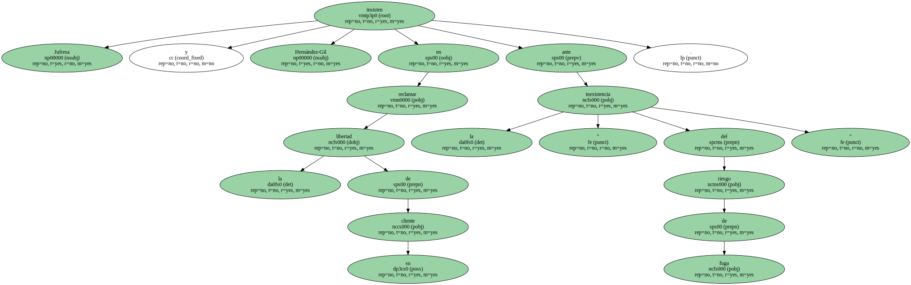La reclamación de Kuwait se fundamenta en la supuesta malversación y uso fraudulento de fondos públicos en la gestión del grupo Kuwait Investment Office ( KIO ).
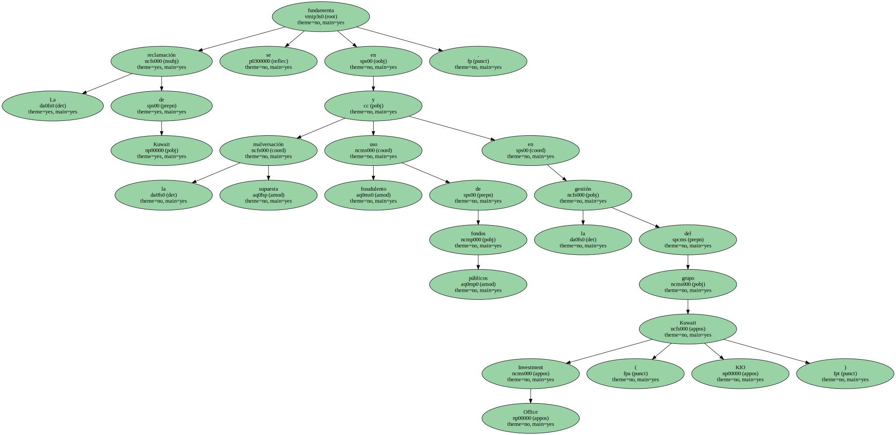El fiscal general de Kuwait imputa de esos delitos a De la Rosa , y a los directivos Fahad Mohammed Al Sabah y Fouad Khaled Jaffar.
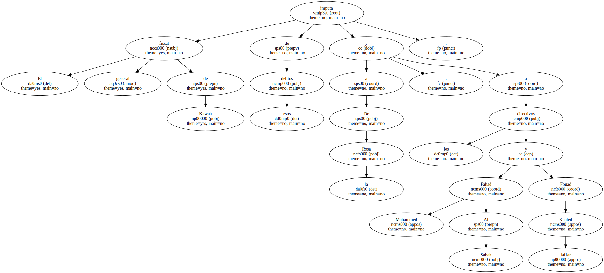El diario kuwaití Al-Qabas publicó el pasado 28 de febrero unas declaraciones del fiscal en las que aseguraba : " Kuwait continúa la persecución de los demandados , que se encuentran en el extranjero , con el fin de arrestarlos y completar la investigación con el interrogatorio de los mismos ".
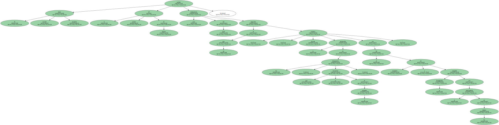El fiscal añadía que su país no se dará por satisfecho hasta que se castigue a los responsables y se devuelva el dinero supuestamente defraudado.

Para los abogados de De la Rosa , la causa kuwaití debe prevalecer sobre la española , ya que comenzó a instruirse en 1992 , un año antes que el procedimiento de Madrid.
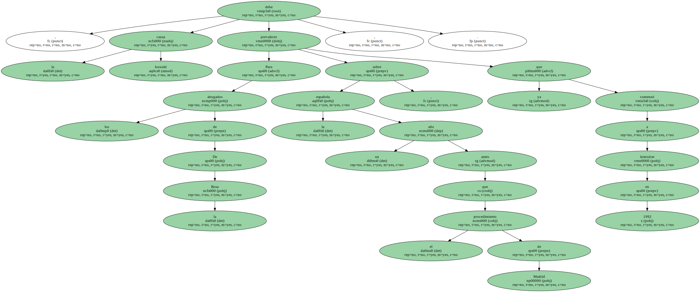Jufresa entiende , además , que " se trata de los mismos delitos " y que un ciudadano español " no puede ser juzgado dos veces por el mismo hecho ".
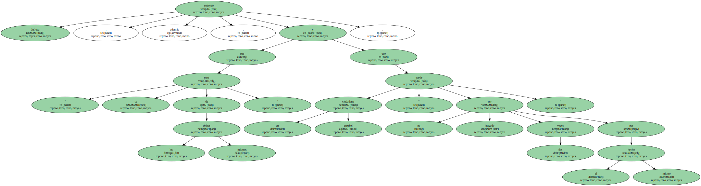Oposición judicial.
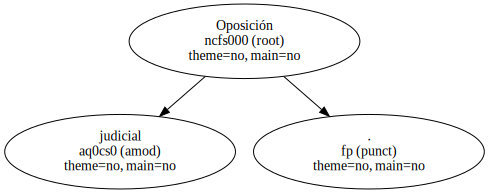Los argumentos esgrimidos por la defensa de De la Rosa han sido desestimados en varias ocasiones por el Juzgado Central de Instrucción número 3 de la Audiencia Nacional.
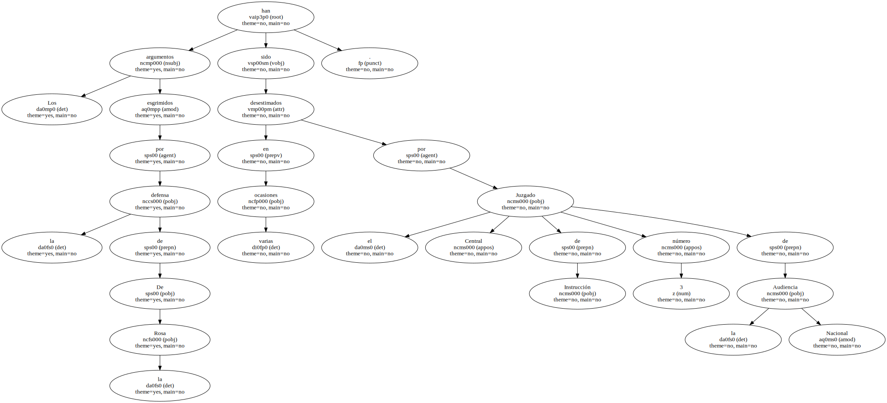Los jueces estiman que persiste el riesgo de fuga y la posibilidad de entorpecer la labor de la justicia si el financiero obtiene la libertad provisional hasta la celebración del juicio.
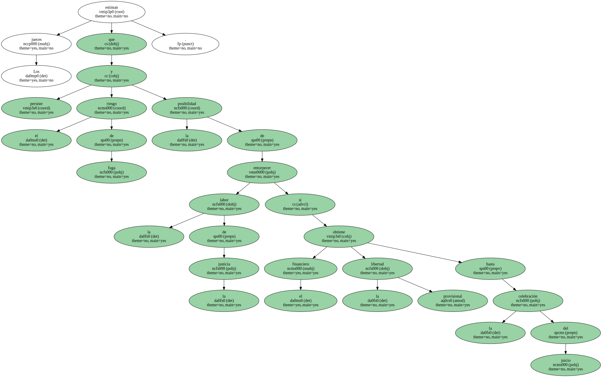